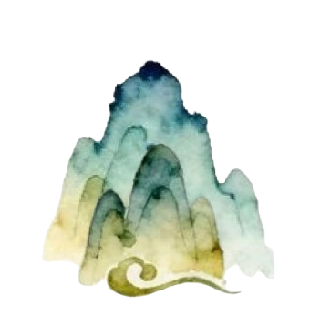

Tema 3
Grundlæggende UX/UI
At arbejde med UX/UI, betyder at arbejde med en hjemmesides digitale brugergrænseflade (UI) og brugeroplevelses design (User Experience Design (UX)). Gennem temaet blev vi givet en grundlæggende forståelse for det samspil der er mellem brugere og brugergrænseflader, samt nogle af de teorier og metoder man kan bruge til undersøgelser, tests og design i digitale produktudviklinger. Dette samspil var ufattelig vigtigt at få en forståelse for, da det nu blev muligt for os, på baggrund af indsigter om og fra reelle brugere, at tage designvalg og produktudvikle ud fra konkrekte observationer i stedet for de tidligere mavefornemmelser og umiddelbare ideer. Tema 3 handlede derfor overordnet om hvordan vi, ud fra eget valgt emne og disse bruger observationer, fik designet og udviklet et emnesite. Dette blev gjort gennem undervisning i procesdokumentation af udviklingen af site, samt formidling af vores undersøgelser og test resultater. Min tanke bag dette projekt, var at udvikle en side der kunne bruges til at finde opskrifter til mad der blev spist i en valgt film. Ideen var at man ville kunne undersøge hvad karakterene spiste i specifikke scener, med billeder fra scenerne som madbilleder, så man nemt kunne finde præcis den sceneret man ledte efter.


Deskresearch er en metode, hvor man kigger på hvad andre har lavet af ting og koncepter der kan minde om hvad man selv gerne vil lave. Dette giver mulighed for at indsamle og analyserer allerede eksisterende data og information der er blevet lavet af andre. Formålet ved at lave deskresearch er at man kan opbygge et fundament af viden om ens koncept, uden at man behøver indsamle komplet ny viden eller egne originale data. Denne metode kan derfor være god til nemt og hurtigt at skabe sig et hurtigt og bredt indblik i et emne eller branche.
Moodboards er noget der er mange der kender noget til. Det er en visual samling af ting, billeder og/eller tekst, hvis formål det er at hjælpe en til at indsaamle og formidle en ønsket stemning, stil eller koncept. Det er et kreativt værktøj der også fungerer som en inspirationskilde, der kan hjælpe med at sikre en rød tråd gennem et projekt. Det kan altid være en god ide at lave en eller anden form for moodboard, når man starter et projekt op, men det kan især være en god hjælp, hvis man er flere om projektet, da det kan sikre at alle der er involveret (designere, udviklere, kunder, brugere, håndværkere osv.) har den samme ramme for forståelse af projektet.
Styletile er der måske ikke lige så mange der kende til, som med moodboards, men arbejder man inden for design verdenen, så er det et term man vil støde på. En styletile er noget der fungerer som en visuel guide. Det er specifikt smart for digitale projekter, idet den kombinerer farveskemaer, typografier og UI (brugergrænseflade) -komponenter. Det fungerer derved som et bindeled mellem moodboard og et færdigt webdesign.

En klikbar prototype er en slags hi-fi wireframe (se TEMA 2 for terminologi forklaring), hvor det er muligt for udvikleren at teste brugeren på forskellige måder. Dette kunne for eksempel gøres ved:
En 5 sekunders test, hvor udvikleren beder brugeren om at kigge, i 5 sekunder, på forsiden af den hjemmeside der bliver testet, hvorefter brugeren vil blive stillet nogle spørgsmål til hvad de lige har kigget på. Dette er en god test til, at finde ud af, hvad folks førstehåndsindtryk er af ens side.
Eller man kunne udføre:
En Tænke-højt test, hvor udvikleren beder brugeren om at udføre små opgaver eller lede efter ting på hjemmesiden, samtidigt med at brugeren skal fortælle og forklare alle tanker de får undervejs. Denne test er god til at se, hvor brugervenlig og let forståeligt/overskueligt ens site er.

Ideen bag mit site, var at lave en side som man kunne bruge til at undersøge og finde opskrifter på hvad folk spiser i den film man sidder og ser. Derfor skulle siden være darkmode (mørk tilstand) som standard, og så kunne ændres til lightmode, hvis dette var ønsket. Havde jeg haft tiden og kunnen, havde jeg implementeret dette, men det var ikke noget vi var blevet undervist i endnu, og noget der desværre tog lidt for lang tid på egen hånd at skulle sætte sig ind i.